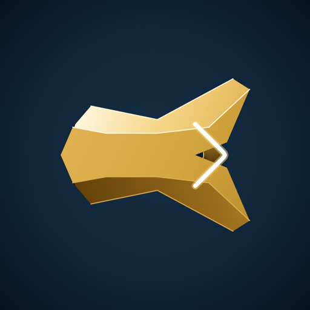

An iOS and iPadOS terminal client engineered for remote servers, persistent tmux sessions, and autonomous coding agents.
Direct integration with Herdr. Inspect active workspaces, receive real-time notifications of blocked agents, and submit prompts directly from your phone.
Generate NIST P-256 keys backed by hardware Secure Enclave. Private keys never leave your physical device and are gated with Face ID.
Multi-endpoint fallback automatically cycles through Tailscale, local LAN, and public domain IP addresses. Reattaches to persistent tmux sessions seamlessly.
No user accounts, no telemetry, no tracking SDKs, and no middleman servers. All connections flow directly between your device and your servers.